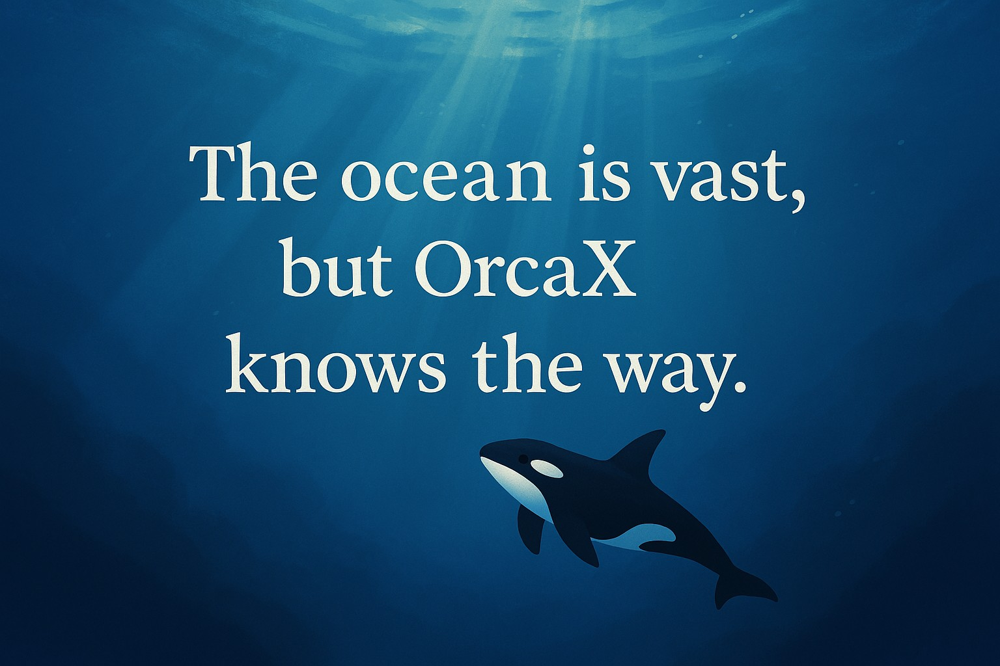

RWA, 토큰이 세상과 닿는 순간
블록체인 기술은 오래도록 가상의 세계 안에서만 회전해왔습니다.
하지만 OrcaX는 그 선을 넘습니다.
우리는 실물자산(RWA, Real World Assets)과
블록체인을 잇는 다리이자 관문입니다.
이 순간은
단순한 디지털 수치가 현실의 가치로 전환되는 경계선이며,
‘가상 자산’이 아닌 실질 자산과 연결된 힘 있는 자산으로
OrcaX가 위상을 전환하는 장면입니다.
RWA는 선택이 아닌 필수,
OrcaX는 현실과 블록체인의 융합이라는 필연을 실현합니다.
